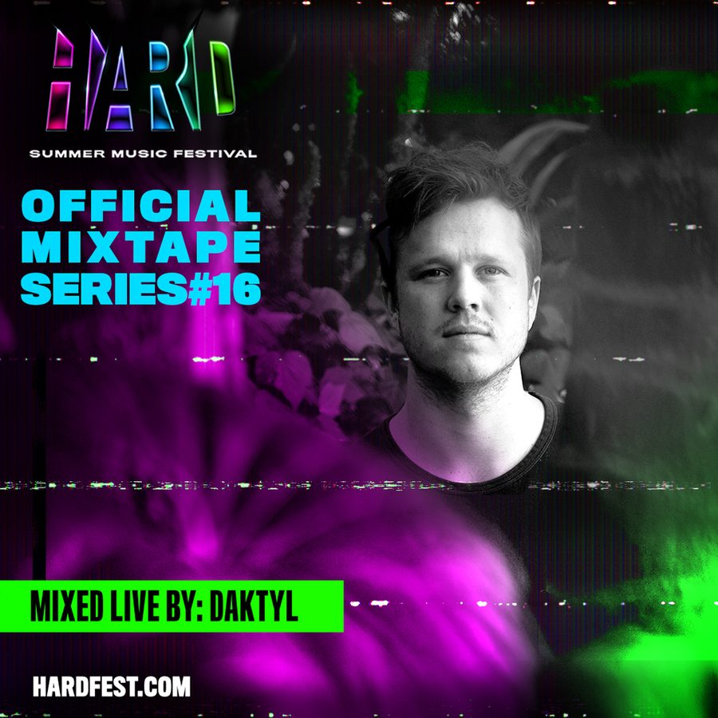

Daktyl Packs Eclectic Electronic Bliss Into His HARD Summer 2018 Mixtape


It’s been roughly a year since we last chatted with Daktyl for our Metronome series. At that point, he was riding high on a number of big developments: After relocating from London to L.A. and being discovered by Mad Decent (who released his 2016 debut album, Cyclical), he’d been signed by Counter Records—the sublabel of the renowned Ninja Tune family and home to the likes of ODESZA, Bicep, Helena Hauff, Maribou State, and more. Plus, he’d just completed a tour with Bonobo.
“At first, I was really nervous about that,” Daktyl told us last year. “But after seeing the reaction at the first [Bonobo] show, I felt much better about it. I think any true fan of an artist wants to see them develop and evolve, not just do the same thing.”
Since then, he’s kept the music flowing at a steady pace. After his Act of Hesitation EP last year and a bunch of singles that followed, he’s back this year with another Riyaaz EP—plus several singles to follow, including the super-fresh “Oscillate” this month.
“Things have been going great—couldn’t be happier,” Daktyl says of this creative purple patch. “I’ve been working on so much new music. I don’t think I’ve ever been more excited to share a project!”
With his next gig at HARD Summer just around the corner, he’s prepared a new mix full of typically eclectic sounds to get us in the mood. So, what does the man himself have to say? Scroll down, and find out for yourself.
After getting picked up by Mad Decent for your debut album, you’ve since signed with Counter Records. Has this proved a good musical match?
Absolutely! It’s been one of my favorite labels for ages, so it’s amazing to be working with them.
This time last year, you were fresh off a tour with Bonobo. There are definitely some music parallels there. How was the tour last year, and did it lead to bigger things?
Thank you for saying that; I’m a big fan of his! It was amazing—definitely a big learning curve and a really inspiring experience. It definitely did, yeah!
You hail from the UK, though you relocated to L.A. a few years ago, where the electronic music scene has obviously been pretty popping. How did this move change things, and where are you based at the moment?
I’m based in Los Feliz at the moment. The move changed a lot of things. In particular, I was able to start playing so many more shows; before, we’d have to organize US shows well in advance, as I was flying all the way from London to get to them. It made that side of things much easier. Also, there are so many amazing musicians to work with in L.A.—that’s definitely a big plus.
What’s your musical master plan?
I’m keeping it secret for now, but I have a LOT planned!
There’s a fairly broad and very musical focus to what you’re doing. How would you sum up your sound to readers who might be new to Daktyl?
I’m really terrible at answering that question. I always tell people just to listen to it! But my approach to music is that there are no rules. I’m never going to just regurgitate the same thing over and over again. I want to push myself creatively, as much as I can.
How does your sound translate into the live arena? Do you ever DJ, or is it all live performances? How do you translate such a dense sound when it’s just you onstage?
I’ve been doing a lot of live shows this year, but I do DJ, too. My DJ sets—I play whatever; I end up playing a lot of weird, heavy stuff. [I’m] just finishing off a DJ tour in Australia, which was crazy. The crowds were really receptive to all the strange shit I was playing.
My live sets, I’m mostly playing my own music. It was really hard at first to convert it to a live show, as it’s just me. I had to really go into the songs and deconstruct them and see what I could play live. It’s been really rewarding, though! Every time I tour live, I try and add new elements and make it better. I’m so excited to see where we can take it.
Tell us a bit about the mix you’ve put together for your upcoming HARD show.
It’s a mix of music I’ve been listening to and stuff I’ve been playing in my DJ sets. Hope you enjoy it!
Daktyl ft. MOONZz “Weather”
KRANE ft. Ahsha & Lemay “Chemical” (Hex Cougar Remix)
Minnesota “Hilow”
Fytch & Paradym “Checkmate”
doppla x HMU “Prehistoric”
Axel Thesleff “Bad Karma”
Zeke Beats “Dispatch”
Party Favor & Baauer “MDR”
Strategy “Chlorine”
Notorious B.I.G. “Hypnotize” (doppla Edit)
Daktyl ft. Janelle Kroll “Oscillate”
Daktyl “Smoke”
Daktyl & OZZIE “Shake Dat”
Halsey “Ghost” (Daktyl Remix)
Point Point “Power”
The xx “On Hold” (Jamie xx Remix)
Zhu x Tame Impala “My Life”
SLUMBERJACK & QUIX ft. Josh Pan “Vision”
G Jones “Helix”
Luude “La De Da”
Joker “Mad Night”
doppla x Stooki Sound “Frank”
Great Dane “Sorry Steve”
EASTGHOST “Eyes in the Back of My Head”
Autograf “Metaphysical” (Daktyl Remix)
What So Not & San Holo ft. Daniel Johns “If You Only Knew”
doppla “100s”
Fwdslxsh “4 U” (Daktyl Remix)
Major Lazer ft. Wild Belle “Be Together” (Daktyl Remix)
Don Diablo “Momentum” (Daktyl Edit)
HARD Summer 2018 takes place Saturday, August 4, and Sunday, August 5, at the Speedway in Fontana, CA. Tickets are on sale now. For more information, visit the official website.
Follow Daktyl on Facebook | Twitter | SoundCloud
Follow HARD on Facebook | Twitter | SoundCloud